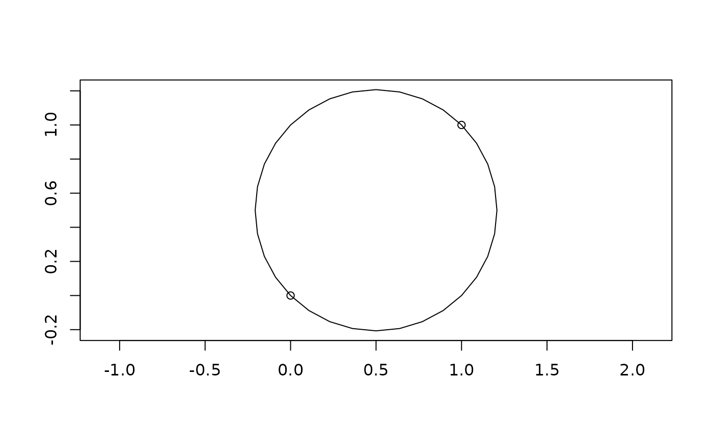
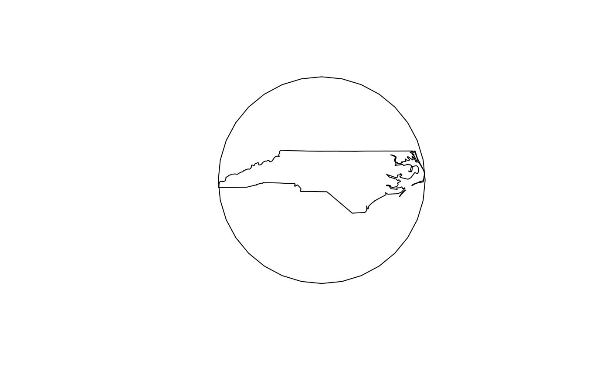

Generate the minimum bounding circle
st_minimum_bounding_circle(x, nQuadSegs = 30)
| x | object of class |
|---|---|
| nQuadSegs | number of segments per quadrant (passed to |
Object of the same class as x
st_minimum_bounding_circle uses the lwgeom_calculate_mbc method also used by the PostGIS command ST_MinimumBoundingCircle.
#>x = st_multipoint(matrix(c(0,1,0,1),2,2)) y = st_multipoint(matrix(c(0,0,1,0,1,1),3,2)) mbcx = st_minimum_bounding_circle(x) mbcy = st_minimum_bounding_circle(y) if (.Platform$OS.type != "windows") { plot(mbcx, axes=TRUE); plot(x, add=TRUE) plot(mbcy, axes=TRUE); plot(y, add=TRUE) }#> Reading layer `nc.gpkg' from data source `/home/runner/work/_temp/Library/sf/gpkg/nc.gpkg' using driver `GPKG' #> Simple feature collection with 100 features and 14 fields #> geometry type: MULTIPOLYGON #> dimension: XY #> bbox: xmin: -84.32385 ymin: 33.88199 xmax: -75.45698 ymax: 36.58965 #> CRS: 4267#>if (.Platform$OS.type != "windows") { plot(st_minimum_bounding_circle(state), asp=1) plot(state, add=TRUE) }